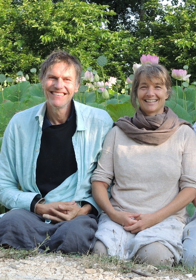

noch ist es windig warm und wunderbar, blauer himmel, sonnenklar.
bald wird es kaelter, nasser, grauer – wunderbar bleibts.
november feiern, verbunden und gluecklich sein: am samstag den 24.11.
mit grossem heissen feuer draussen und cooler musik im haus.
wir freuen uns ueber jeden kreativen beitrag, vor allem, was uns gemeinsam motiviert, zusammenbringt, verbindet.
darum geht es uns, das liegt uns am herzen.
du bist auch herzlich willkommen, in den tagen vorher, mittwoch, donnerstag und freitag bei uns hereinzuschauen, plaudern, spielen, vorbereiten, zusammen sein, auch falls du am samstag verhindert sein solltest. dann haben wir mehr zeit zum austauschen!
bitte keine geschenke!
fuer getraenke und grundnahrung ist gesorgt.
bring gerne was leckeres fuers buffet mit, deine musik zum tanzen, alles was dir spass macht, vor allem dich selbst und dein so-sein wie du bist.
du kannst kommen und gehen wann du willst. wir freuen uns auch tagsueber ueber besuch; kaffee, tee und torten sind vorhanden.
es gibt keine bestimmte anfangszeit, uebernachtung ist problemlos moeglich, entweder im haus oder im ruhigen hotel elben nebenan.
du bist auch schon am freitag herzlich willkommen, z.b. wenn du von weiter her kommst, mithelfen willst, mehr von uns sehen magst, eine gemuetliche einstimmung geniessen und auch gar nichts tun willst oder es sonstwie fuer dich passt.
am sonntag den 25.11 machen wir eine schwitzhuette, entspannt und spirituell... dauer ca. 12:00 bis 24:00 uhr. wenn du daran interesse hast, melde dich bitte schnell und verbindlich an, da nicht mehr als zehn menschen platz haben.
wir wuenschen dir wunderbare herbstwochen und freuen uns sehr, wenn du kommst.
liebe gruesse,
jeremy und moni
2008 mit Schnee:


2015 und 2016:


mehr fotos von 2016 – more pictures from 2016 – das feuer und die aussicht am naechsten tag – the fire and the view the next day.
die schwitzhuette ist eine gemaechliche sache, zeitlose 'indianerzeit', ohne stress und leistung.
zeit: ungefaehr sonntag mittag 12 uhr, bis spaet abends, ausklang mit gemeinsames essen, ende ca. 23 uhr.
am mittag fangen wir an mit dem aufbau, einrichten und vorbereiten, am spaetnachmittag zuenden wir das feuer an, damit wir am fruehen abend schwitzen und danach zusammen essen und ausklingen lassen koennen.
jeder bringt was zum essen mit.
fuer die schwitzhuette ist ein handtuch, gute schuhe, handschuhe und warme kleider sinnvoll, mehr braucht es nicht.
dem feuermann oder der feuerfrau uebergibt man ein kleines geschenk; wir wissen noch nicht, wer das sein wird.
mehr infos zum thema schwitzhuette gibt es auf wikipedia und vielen anderen orten.
here is some information in english about the sweat lodge.
man muss aber nichts wissen – you do not need to know anything at all :-)
Erste, despektierliche version:

Leserbrief und die zweite, korrigierte version:

Entscheide dich fuer dein Glueck! – Make a conscious decision to be happy!

Jeremy's Notizen zum achtsames Leben und mein Ringen mit dem Lächeln – Jeremy's notes on mindful living and smiling to myself.
Ich bin beeindruckt und berührt von Juli Zehs tiefblickende Analyse von dem Wechselspiel von Social Media und aktuelle gesellschaftliche und politische Zustände.
Juli Zeh spricht über die Macht von Stimmungen und die Zukunft der Demokratie in dem Vortrag Das Turbo-Ich – Der Mensch im Kommunikationszeitalter, zu Gast bei der Tübinger Mediendozentur CampusTV Tübingen am 12 Juli 2018: